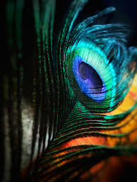

leader Babita Phogat said that Bhupinder Hooda caused a “rift” in the Phogat family after her cousin, wrestler Vinesh Phogat joined Congress.
Babita Phogat, wrestler and BJP leader, accused senior Congress leader Bhupinder Singh Hooda for causing a
“rift” in the Phogat family after her cousin Vinesh Phogat joined the Congress, days after retirement from wrestling,
reported India Today. Babita also said that Vinesh took a hasty decision by joining the grand old party after announcing retirement from wrestling.

Bhupinder Hooda succeeded in creating a rift in the Phogat family. People will teach him a lesson.
The Congress's agenda has been to divide and rule. They have always worked to break families,”
the wrestler-turned-politician was quoted by India Today as saying.

Read more: Haryana elections:
Why Vinesh Phogat took her fight to the political mat
The former wrestler further said Phogat should have taken her uncle Mahavir's advice, as he was trying to show her the “right path”.
Babita said, “Mahavir Phogat is Vinesh's guru. She should have obeyed her guru. Guru shows the
right path.”
Echoing the words of her father Mahavir Phogat, the BJP leader said that Vinesh
should have focused on preparing herself for the 2028 Olympics. If she had focused on her wrestling
career, she could have won a gold medal in the next Olympics, Babita said.f.
The former wrestler further said that Vinesh Phogat should have taken her uncle Mahavir's advice,
as he was trying to show her the “right path”. Babita said, “Mahavir Phogat is Vinesh's guru. She
should have obeyed her guru. Guru shows the right path.”
Echoing the words of her father Mahavir
Phogat, the BJP leader said that Vinesh should have focused on preparing herself for the 2028 Olympics.
If she had focused on her wrestling career, she could have won a gold medal in the next Olympics, Babita
said.

")
Last week, wrestlers Bajrang Punia and Vinesh Phogat joined the Congress party, and the latter was
given a ticket to contest the Haryana assembly elections from the Julana constituency.
Babita Phogat,
who joined BJP in 2019 and unsuccessfully contested he assembly polls that year, was not given a ticket
by the party this time. However, she backed the party's decision and said, “Party is bigger than the individual
and the country is bigger than the party.”
“I stand with the decision of the top leadership of the BJP. Being a
dedicated party worker, I will continue to discharge every responsibility given by the organisation,” she added.
The Haryana assembly elections 2024 will take place in a single phase on October 5, and the counting of the
votes will take place on October 8.